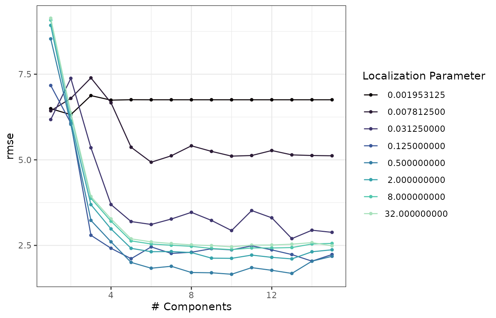
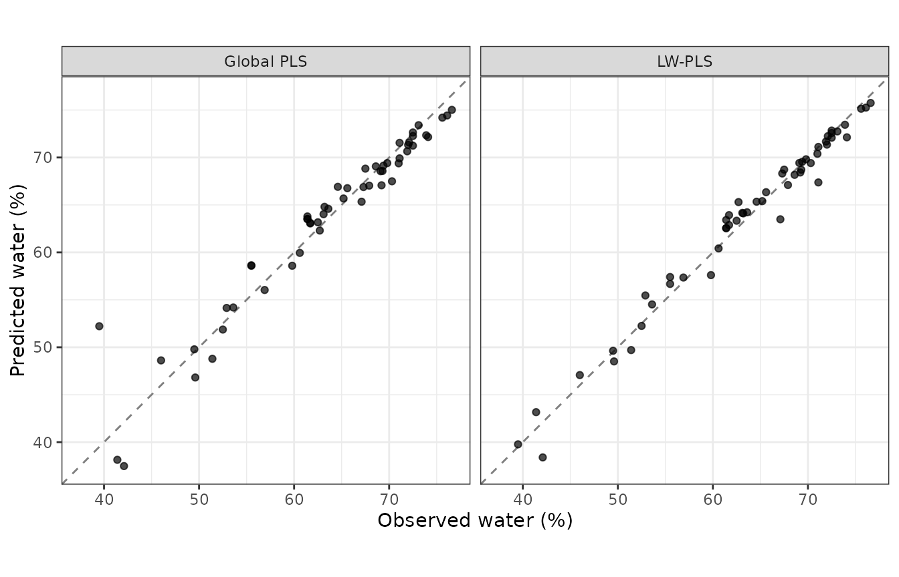
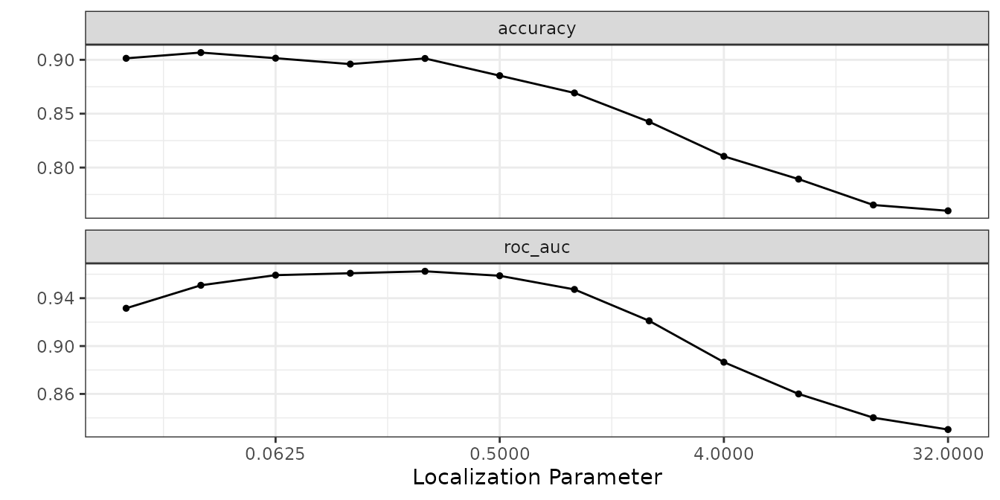
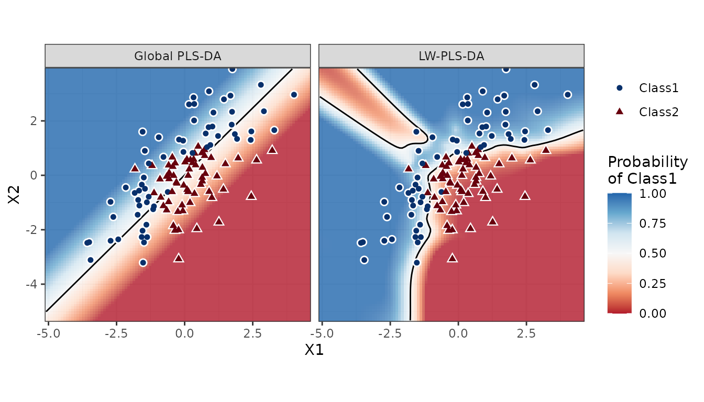
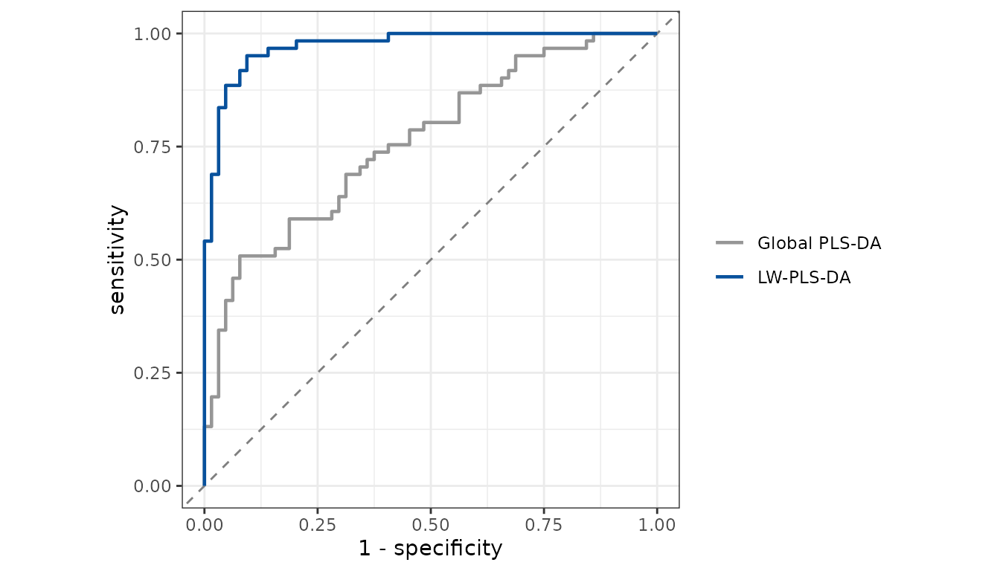
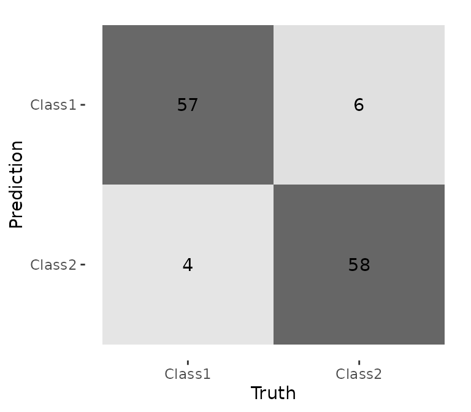

Locally-weighted partial least squares (LW-PLS) is a just-in-time learning method. Instead of fitting a single global PLS model, LW-PLS builds a new weighted PLS model around every sample to be predicted. Training samples that are similar to the query get large weights and dissimilar ones get small weights. The result is a locally linear model that can follow nonlinear and drifting relationships, which is why LW-PLS is widely used for soft sensors and for spectroscopic calibration.
The lwpls package implements LW-PLS natively (the prediction kernel is written in C++) and integrates it with tidymodels:
-
lwpls()is a parsnip model specification for regression and classification; -
localization()is a dials tuning parameter; -
tune evaluates all values
of
num_compfrom a single model fit.
library(lwpls)
library(parsnip)
library(rsample)
library(tune)
library(workflows)
library(yardstick)
library(ggplot2)The algorithm
For a query sample \(x_q\), the similarity weight of the training sample \(x_i\) is
\[ \omega_i = \exp\left(-\frac{d_i}{\sigma_d \, \varphi}\right), \qquad d_i = \lVert x_i - x_q \rVert, \]
where \(\sigma_d\) is the standard
deviation of the distances \(d_i\) and
\(\varphi > 0\) is the
localization parameter. The training data are centered
with the weighted means, a PLS model with num_comp
components is fitted using the weights \(\omega_i\), and the query is projected onto
that local model to get its prediction.
The two main hyperparameters are therefore:
-
num_comp: the number of PLS components of the local models; -
localization: small values make the models very local (only the nearest samples matter); large values make all weights similar, so LW-PLS tends to a global PLS model.
Optionally, neighbors restricts each local model to the
nearest training samples (the “KNN-LW” strategy compared with the
original LW-PLS by Lesnoff et al., 2020), and similarity
changes how the distances \(d_i\) are
measured (see Similarity indexes).
Regression: fat-free water content of meat from NIR spectra
The meats data from the modeldata package contain 100
near-infrared absorbance values for 215 meat samples. We predict the
water content.
data(meats, package = "modeldata")
meats <- meats[, !names(meats) %in% c("fat", "protein")]
set.seed(123)
meats_split <- initial_split(meats, prop = 0.75)
meats_train <- training(meats_split)
meats_test <- testing(meats_split)
meats_folds <- vfold_cv(meats_train, v = 5)The model specification marks both hyperparameters for tuning. Since
LW-PLS calculates its local models at prediction time, all values of
num_comp are obtained from the same model, and tune fits
only one model per value of localization (the “submodel
trick”).
lwpls_spec <-
lwpls(num_comp = tune(), localization = tune()) |>
set_mode("regression")
lwpls_wflow <- workflow(water ~ ., lwpls_spec)
lwpls_grid <- dials::grid_regular(
dials::num_comp(c(1, 15)),
localization(),
levels = c(num_comp = 15, localization = 8)
)
lwpls_res <- tune_grid(
lwpls_wflow,
resamples = meats_folds,
grid = lwpls_grid,
metrics = metric_set(rmse, rsq)
)
show_best(lwpls_res, metric = "rmse", n = 5)
#> # A tibble: 5 × 8
#> num_comp localization .metric .estimator mean n std_err .config
#> <int> <dbl> <chr> <chr> <dbl> <int> <dbl> <chr>
#> 1 10 0.5 rmse standard 1.66 5 0.156 pre0_mod077_post0
#> 2 13 0.5 rmse standard 1.68 5 0.198 pre0_mod101_post0
#> 3 9 0.5 rmse standard 1.70 5 0.174 pre0_mod069_post0
#> 4 8 0.5 rmse standard 1.71 5 0.184 pre0_mod061_post0
#> 5 12 0.5 rmse standard 1.77 5 0.194 pre0_mod093_post0
autoplot(lwpls_res, metric = "rmse") +
scale_color_viridis_d(option = "mako", end = 0.9) +
theme_bw()
Very local models (small localization) quickly over-fit,
while very large values reproduce global PLS. The best models lie in
between.
The same results form an RMSE surface over the two hyperparameters, which can be explored in 3D with plotly (rendered on the package website):
rmse_grid <- collect_metrics(lwpls_res)
rmse_grid <- rmse_grid[rmse_grid$.metric == "rmse", ]
best <- rmse_grid[which.min(rmse_grid$mean), ]
locs <- sort(unique(rmse_grid$localization))
# rows: localization, columns: num_comp
rmse_mat <- with(rmse_grid, tapply(mean, list(localization, num_comp), identity))
hover <- "num_comp: %{x}<br>localization: %{y:.4g}<br>RMSE: %{z:.3f}<extra></extra>"
plotly::plot_ly() |>
plotly::add_surface(
x = sort(unique(rmse_grid$num_comp)), y = locs, z = rmse_mat,
colorscale = list(list(0, "#cde2fb"), list(0.5, "#3987e5"), list(1, "#0d366b")),
showscale = FALSE, hovertemplate = hover
) |>
plotly::add_markers(
x = best$num_comp, y = best$localization, z = best$mean,
marker = list(size = 6, color = "#eb6834", line = list(color = "white", width = 2)),
hovertemplate = paste0("<b>Best</b><br>", hover), showlegend = FALSE
) |>
plotly::layout(
scene = list(
xaxis = list(title = "num_comp"),
yaxis = list(
title = "localization", type = "log",
tickvals = locs, ticktext = paste0("2<sup>", log2(locs), "</sup>")
),
zaxis = list(title = "RMSE"),
camera = list(eye = list(x = 1.7, y = 1.6, z = 0.8))
),
margin = list(l = 0, r = 0, t = 0, b = 0)
)We finalize the workflow with the best parameters and evaluate it on the test set:
best_params <- select_best(lwpls_res, metric = "rmse")
best_params
#> # A tibble: 1 × 3
#> num_comp localization .config
#> <int> <dbl> <chr>
#> 1 10 0.5 pre0_mod077_post0
lwpls_final <-
lwpls_wflow |>
finalize_workflow(best_params) |>
last_fit(meats_split)
collect_metrics(lwpls_final)
#> # A tibble: 2 × 4
#> .metric .estimator .estimate .config
#> <chr> <chr> <dbl> <chr>
#> 1 rmse standard 1.38 pre0_mod0_post0
#> 2 rsq standard 0.978 pre0_mod0_post0Comparison with global PLS
With a very large localization, all training samples get the same weight and LW-PLS reduces to ordinary PLS. This gives a convenient baseline:
pls_wflow <- workflow(
water ~ .,
lwpls(num_comp = tune(), localization = 1e6) |> set_mode("regression")
)
pls_res <- tune_grid(
pls_wflow,
resamples = meats_folds,
grid = data.frame(num_comp = 1:15),
metrics = metric_set(rmse, rsq)
)
pls_final <-
pls_wflow |>
finalize_workflow(select_best(pls_res, metric = "rmse")) |>
last_fit(meats_split)
collect_metrics(pls_final)
#> # A tibble: 2 × 4
#> .metric .estimator .estimate .config
#> <chr> <chr> <dbl> <chr>
#> 1 rmse standard 2.40 pre0_mod0_post0
#> 2 rsq standard 0.933 pre0_mod0_post0The local models clearly improve on the global calibration.
test_preds <- rbind(
data.frame(model = "Global PLS", collect_predictions(pls_final)),
data.frame(model = "LW-PLS", collect_predictions(lwpls_final))
)
ggplot(test_preds, aes(water, .pred)) +
geom_abline(color = "grey50", linetype = 2) +
geom_point(alpha = 0.7) +
facet_wrap(~model) +
coord_obs_pred() +
labs(x = "Observed water (%)", y = "Predicted water (%)") +
theme_bw()
Similarity indexes
By default, the similarity between two samples is based on the Euclidean distance between their (standardized) predictors, so every predictor counts equally, whether or not it is related to the outcome. Covariance-based LW-PLS (CbLW-PLS; Hazama and Kano, 2015) measures the distances along the covariance direction \(\Gamma = X^\top y / \lVert X^\top y \rVert\) of the training data instead,
\[ d_i = \lVert \Gamma^\top (x_i - x_q) \rVert, \]
so that the predictors related to the outcome drive the similarity.
Use similarity = "covariance" to select it. Since the best
index depends on the data, it can be tuned together with the other
parameters with similarity():
similarity_wflow <- workflow(
water ~ .,
lwpls(num_comp = tune(), localization = tune(), similarity = tune()) |>
set_mode("regression")
)
similarity_grid <- dials::grid_regular(
dials::num_comp(c(1, 15)),
localization(),
similarity(),
levels = c(num_comp = 15, localization = 8, similarity = 2)
)
similarity_res <- tune_grid(
similarity_wflow,
resamples = meats_folds,
grid = similarity_grid,
metrics = metric_set(rmse)
)
# Best configuration of each similarity index
similarity_perf <- collect_metrics(similarity_res)
best_by_index <- lapply(
split(similarity_perf, similarity_perf$similarity),
function(x) x[which.min(x$mean), ]
)
do.call(rbind, best_by_index)[, c("similarity", "num_comp", "localization", "mean", "std_err")]
#> # A tibble: 2 × 5
#> similarity num_comp localization mean std_err
#> <chr> <int> <dbl> <dbl> <dbl>
#> 1 covariance 10 0.5 1.69 0.175
#> 2 euclidean 10 0.5 1.66 0.156On these spectra, the two indexes perform similarly. Hazama and Kano found CbLW-PLS to give the best predictions in two industrial applications, so it is worth including in the tuning grid.
Classification
For a factor outcome, LW-PLS models the class indicators: this is locally weighted partial least squares-discriminant analysis (LW-PLS-DA, Bevilacqua and Marini, 2014). The predicted class is the one with the largest predicted indicator, and the indicators, truncated to \([0, 1]\), give the class probabilities.
Because every local model is linear but fitted around its own query,
LW-PLS-DA can follow curved class boundaries that a global PLS-DA model
cannot. The parabolic data from modeldata illustrate this:
two classes separated by a parabola in the plane of the predictors
X1 and X2.
data(parabolic, package = "modeldata")
set.seed(91)
para_split <- initial_split(parabolic, strata = class)
para_train <- training(para_split)
para_test <- testing(para_split)
para_folds <- vfold_cv(para_train, v = 5, strata = class)With two predictors, local models have at most two components, so we
tune localization only:
lwplsda_wflow <- workflow(
class ~ .,
lwpls(num_comp = 2, localization = tune()) |> set_mode("classification")
)
lwplsda_res <- tune_grid(
lwplsda_wflow,
resamples = para_folds,
grid = data.frame(localization = 2^seq(-6, 5)),
metrics = metric_set(roc_auc, accuracy)
)
show_best(lwplsda_res, metric = "roc_auc", n = 3)
#> # A tibble: 3 × 7
#> localization .metric .estimator mean n std_err .config
#> <dbl> <chr> <chr> <dbl> <int> <dbl> <chr>
#> 1 0.25 roc_auc binary 0.962 5 0.00424 pre0_mod05_post0
#> 2 0.125 roc_auc binary 0.961 5 0.00488 pre0_mod04_post0
#> 3 0.0625 roc_auc binary 0.959 5 0.00337 pre0_mod03_post0
Performance drops steadily as the models become more global. We
compare the tuned LW-PLS-DA model with global PLS-DA (a very large
localization) on the test set:
lwplsda_final <-
lwplsda_wflow |>
finalize_workflow(select_best(lwplsda_res, metric = "roc_auc")) |>
last_fit(para_split, metrics = metric_set(roc_auc, accuracy))
plsda_final <-
workflow(
class ~ .,
lwpls(num_comp = 2, localization = 1e6) |> set_mode("classification")
) |>
last_fit(para_split, metrics = metric_set(roc_auc, accuracy))
rbind(
data.frame(model = "LW-PLS-DA", collect_metrics(lwplsda_final)),
data.frame(model = "Global PLS-DA", collect_metrics(plsda_final))
)[, c("model", ".metric", ".estimate")]
#> model .metric .estimate
#> 1 LW-PLS-DA accuracy 0.9200000
#> 2 LW-PLS-DA roc_auc 0.9728484
#> 3 Global PLS-DA accuracy 0.6640000
#> 4 Global PLS-DA roc_auc 0.7612705The decision regions show why. The global model can only separate the
classes with a straight line, while the local models bend the boundary
along the parabola. The shading is the predicted probability of
Class1, the black line is the 0.5 contour, and the points
are the test samples:
para_grid <- expand.grid(
X1 = seq(min(parabolic$X1), max(parabolic$X1), length.out = 100),
X2 = seq(min(parabolic$X2), max(parabolic$X2), length.out = 100)
)
region_probs <- function(final, model) {
probs <- predict(extract_workflow(final), para_grid, type = "prob")
data.frame(para_grid, model = model, .pred_Class1 = probs$.pred_Class1)
}
regions <- rbind(
region_probs(plsda_final, "Global PLS-DA"),
region_probs(lwplsda_final, "LW-PLS-DA")
)
ggplot(regions, aes(X1, X2)) +
geom_raster(aes(fill = .pred_Class1), alpha = 0.8) +
geom_contour(aes(z = .pred_Class1), breaks = 0.5, color = "black") +
geom_point(data = para_test, aes(shape = class), color = "white", size = 2.6) +
geom_point(data = para_test, aes(shape = class, color = class), size = 1.6) +
facet_wrap(~model) +
scale_fill_distiller(palette = "RdBu", direction = 1, limits = c(0, 1)) +
scale_color_manual(values = c(Class1 = "#08306B", Class2 = "#67000D")) +
coord_equal(expand = FALSE) +
labs(fill = "Probability\nof Class1", color = NULL, shape = NULL) +
theme_bw()
The ROC curves on the test set summarize the difference across all probability thresholds:
test_roc <- function(final, model) {
roc <- roc_curve(collect_predictions(final), truth = class, .pred_Class1)
data.frame(model = model, roc)
}
roc_data <- rbind(
test_roc(lwplsda_final, "LW-PLS-DA"),
test_roc(plsda_final, "Global PLS-DA")
)
ggplot(roc_data, aes(1 - specificity, sensitivity, color = model)) +
geom_abline(color = "grey50", linetype = 2) +
geom_path(linewidth = 0.8) +
scale_color_manual(values = c("LW-PLS-DA" = "#08519C", "Global PLS-DA" = "#969696")) +
coord_equal() +
labs(color = NULL) +
theme_bw()
Finally, the confusion matrix of the LW-PLS-DA model on the test set:
collect_predictions(lwplsda_final) |>
conf_mat(truth = class, estimate = .pred_class) |>
autoplot(type = "heatmap")
Note that in regions without training data, such as the upper-left corner, the local models extrapolate from the nearest samples, so their predictions should not be over-interpreted.
For more than two classes, the model works the same way and returns
one .pred_{level} probability column per class.
Using the engine directly
The fitting function lwpls_fit() can be used without
parsnip. It has matrix, data frame, formula and recipe interfaces, and
its predict() method can use any number of components:
fit <- lwpls_fit(water ~ ., data = meats_train, num_comp = 10, localization = 0.5)
fit
#> Locally-weighted PLS (regression)
#>
#> Training samples: 161
#> Predictors: 100 (standardized)
#> Outcomes: water
#> Components: 10
#> Localization: 0.5
#> Similarity: Euclidean
#> Neighbors: all (161)
predict(fit, head(meats_test))
#> # A tibble: 6 × 1
#> .pred
#> <dbl>
#> 1 47.1
#> 2 70.4
#> 3 63.4
#> 4 75.7
#> 5 69.8
#> 6 72.1
predict(fit, head(meats_test), num_comp = 3)
#> # A tibble: 6 × 1
#> .pred
#> <dbl>
#> 1 47.3
#> 2 70.5
#> 3 63.1
#> 4 73.0
#> 5 62.3
#> 6 74.7Several numbers of components can be predicted at once from a parsnip
model with multi_predict():
parsnip_fit <- extract_fit_parsnip(lwpls_final)
multi_predict(parsnip_fit, head(meats_test), num_comp = c(5, 10, 15))$.pred[[1]]
#> # A tibble: 3 × 2
#> num_comp .pred
#> <int> <dbl>
#> 1 5 49.2
#> 2 10 47.1
#> 3 15 47.1Robust and sparse local models
The local models can also be made robust to outliers in the training
data (set_engine("lwpls", robust = TRUE)) and sparse
(sparsity), see vignette("robust-sparse"). The
local models behind the predictions, with diagnostics and plots for
spectroscopy, are described in vignette("diagnostics").
Engine arguments
The "lwpls" engine standardizes the predictors (and
numeric outcomes) before computing distances by default. For data
measured on a common scale, such as spectra, this can be switched
off:
lwpls(num_comp = 10, localization = 0.5) |>
set_mode("regression") |>
set_engine("lwpls", scale = FALSE) |>
translate()
#> Locally-Weighted PLS Model Specification (regression)
#>
#> Main Arguments:
#> num_comp = 10
#> localization = 0.5
#>
#> Engine-Specific Arguments:
#> scale = FALSE
#>
#> Computational engine: lwpls
#>
#> Model fit template:
#> lwpls::lwpls_fit(x = missing_arg(), y = missing_arg(), num_comp = 10,
#> localization = 0.5, scale = FALSE)References
- Kim, S., Kano, M., Nakagawa, H. and Hasebe, S. (2011). Estimation of active pharmaceutical ingredients content using locally weighted partial least squares and statistical wavelength selection. International Journal of Pharmaceutics, 421(2), 269–274.
- Bevilacqua, M. and Marini, F. (2014). Local classification: Locally weighted-partial least squares-discriminant analysis (LW-PLS-DA). Analytica Chimica Acta, 838, 20–30.
- Hazama, K. and Kano, M. (2015). Covariance-based locally weighted partial least squares for high-performance adaptive modeling. Chemometrics and Intelligent Laboratory Systems, 146, 55–62.
- Lesnoff, M., Metz, M. and Roger, J.-M. (2020). Comparison of locally weighted PLS strategies for regression and discrimination on agronomic NIR data. Journal of Chemometrics, 34(5), e3209.
- Dayal, B. S. and MacGregor, J. F. (1997). Improved PLS algorithms. Journal of Chemometrics, 11(1), 73–85.